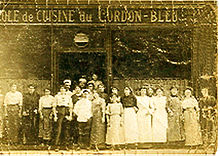
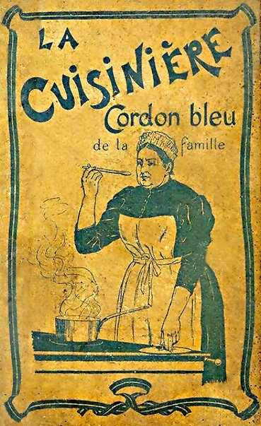

16世紀當法國國王亨利三世用「聖靈勳章」代表法國最高榮譽的時候，藍帶的榮譽就註定將隨之載入史冊。
這枚勳章將聖靈十字架系在一條藍色的絲帶上，這條藍色的絲帶便是人們後來所熟知的藍帶。
聖靈勳章所代表的榮耀以及在授勳儀式後法皇第一次將其融入美食的盛宴，使人們從此記住了這條「藍帶」並為之歡呼。
最早的藍帶學校於1895年在法國巴黎成立，其創始人是藍帶廚師雜誌的出版商兼記者Marthe Distel。
1896年1月14日，在藍帶學校舉辦的世界上第一場廚藝秀奠定了藍帶作為世界級廚藝學校的聲譽。
最開始人們只是希望通過這場在電爐上烹飪的廚藝秀推銷藍帶雜誌，並向世界宣告在巴黎有一所藍帶廚藝學校，卻沒想到藍帶的名聲在這場廚藝秀過後變得家喻戶曉了。
隨之而來的便是藍帶吸引了那些久負盛名的廚師前來教學，慕名而來的學員更是蜂擁而至，其中也不乏社會名流。
1950年，藍帶便接待了茱莉亞·蔡爾德。
今天的藍帶是一個橫跨五大洲20個國家、擁有50所分校，並且每年培養2萬多名學員的國際教育機構。
藍帶學校的日常教學由頂級廚師擔任，他們都來自於有米其林星級評定的餐廳，或者是在重大廚藝比賽中勝出的選手以及一些獲得其它榮譽稱號的廚藝大師。
例如：歐洲最著名的獎項之一 《Meilleur Ouvrier de France》。
同時藍帶的大師們也都致力於將經典的法式烹飪方法和時尚的國際烹飪技巧傳授給他們的學員。

您是否知道法國巴黎哥頓布魯烹飪學校的創始人是女性？好吧，她是Marthe Distel
於1894年創辦了一本名為《La Censulaère CordonBleu》的烹飪雜誌，並提供了一個神話般的公關理念、提供烹飪課程，
每天人們都可以看到專業廚師烹飪雜誌中的菜餚。這所學校被稱為哥頓布魯學校，也是朱莉婭兒童在20世紀中期學會烹飪的地方。

這雜誌發行的非常成功，導致Marthe Distel有了教導他的讀者廚藝課程的想法。於是她在1895年於巴黎創辦了藍帶廚藝學院。
第一堂課是開始於1895年10月15日，星期二，與廚師Charles Driessensm。
從一開始學校就歡迎優秀的廚師到校提供示範，其中包含廚師Henri-Paul Pellaprat、F.Barthélémy、Charles Poulain、Auguste Colombié在當時都非常之名。
聲望成長
此課程馬上就感受到眼前的成功，巴黎校區的名聲很快的傳播到其他的國家。
在1897年藍帶巴黎歡迎第一個俄羅斯學生入校學習廚藝，並於1905年迎接第一位日本學生。
當時倫敦每日郵報中的一篇巴黎藍帶報導觀察到，“多達八個不同國籍的學生代表出現在同一間教室是件很不尋常的事情。＂
Julia Child一位知名成就的人士，在1948年於巴黎入學，也是當時其中一位的外籍學生。
下一頁